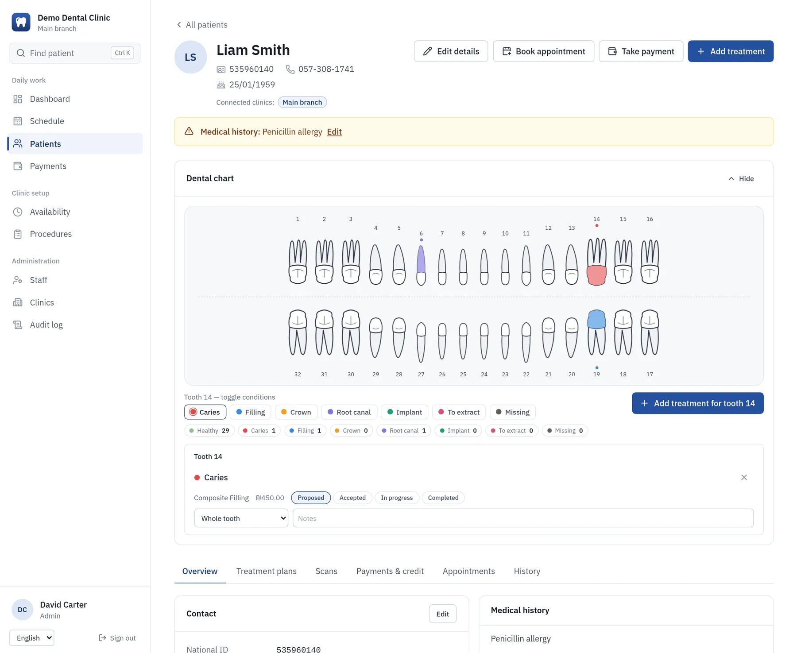
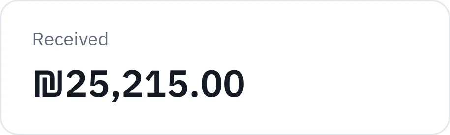
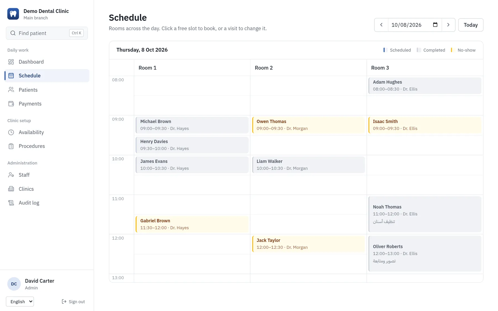
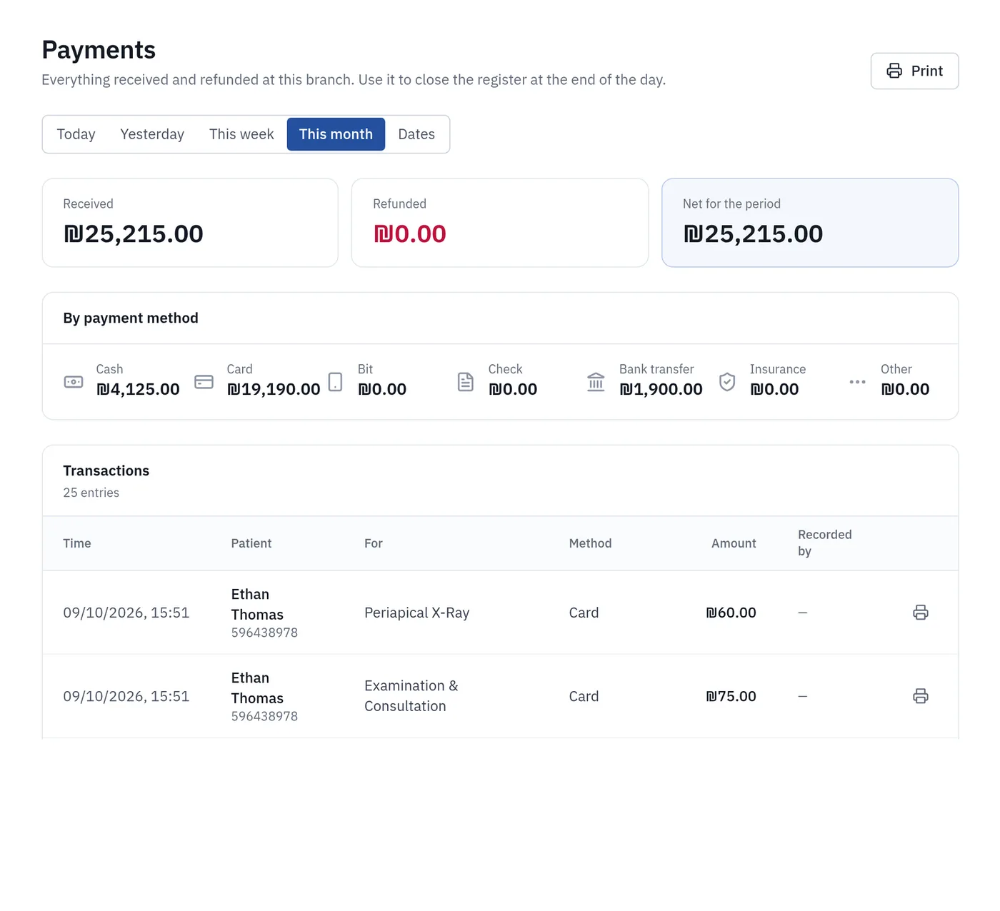
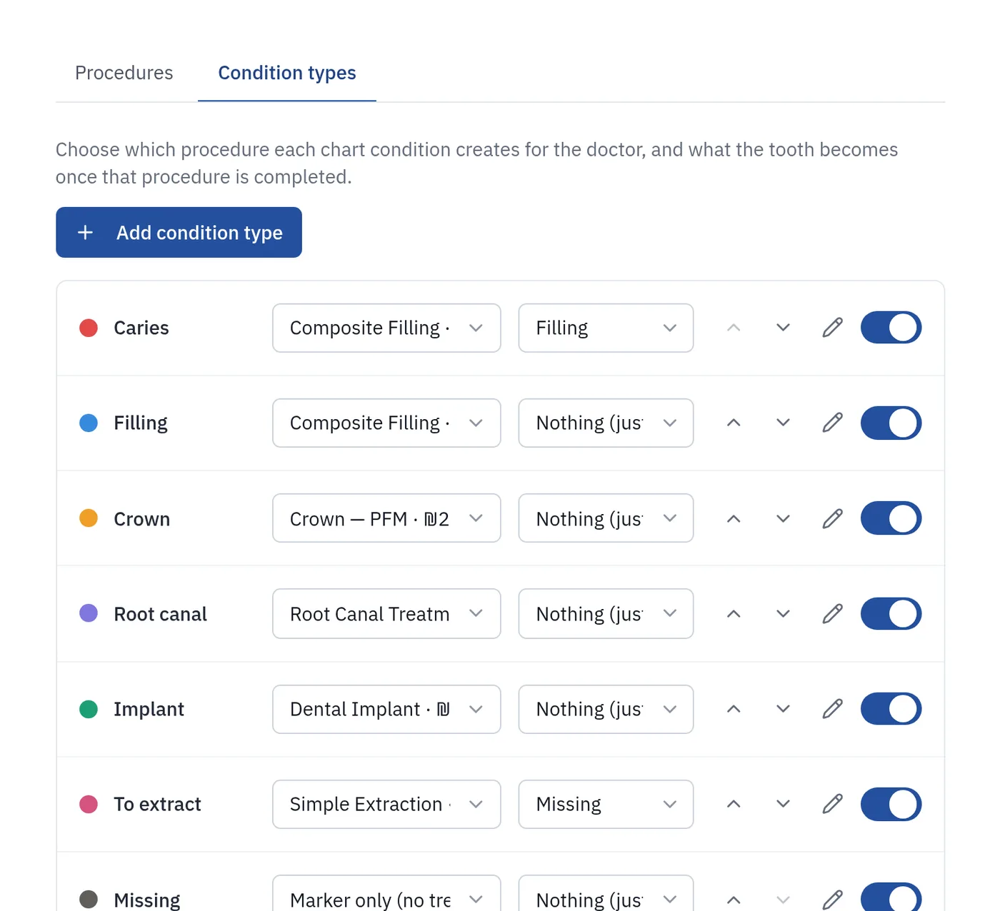

The whole clinic, run from the tooth chart.
ClinicLine is software for dental clinics: appointments, patient files, treatment plans and payments in one place, in Hebrew, Arabic and English.


Three languages
Hebrew, Arabic and English, right to left where it should be.
A private system per clinic
Its own database, shared with no one.
Backed up every night
Copies kept away from the server.
Works in a browser
Nothing to install on the clinic computers.
What it does
Everything the front desk, the doctors and the owner touch in a day.
Schedule
A day view for each doctor and room. Double bookings are caught before they happen.
Patient files
Contact details, medical history, allergies, appointments and notes. Find anyone by national ID or name.
Tooth chart
Click a tooth to record a finding. The treatment is added to the plan, and completing it updates the chart.
Treatment plans
Procedures come from your own price list and move from proposed to completed.
Payments and credit
Take cash, card, bank transfer, check or Bit. Keep patient credit and see who owes what.
Scans
Keep X-rays and photos with each patient, visible to doctors and admins only.
Several branches
One account for all your branches. Patients are shared, staff are assigned per branch.
Three languages
Hebrew, Arabic and English. Hebrew and Arabic are laid out right to left.
See it working
Real screens from ClinicLine, with made-up demo data.



Each person sees what their job needs
Doctors
Their own agenda, patient charts, treatment plans and scans.
Reception
The whole day's schedule, check-in and payments. No access to scans.
Admins
Staff, branches, the price list, chart settings and who can do what.
Your patients' data stays yours
A patient file is private. This is how ClinicLine treats it.
Your own system
Each clinic runs separately with its own database. Nothing is shared with other clinics.
Encrypted connection
Everything travels over HTTPS.
Backed up every night
Backups are kept away from the server, and we have tested restoring them.
Access is logged
You can see who opened or changed a patient file, and when.
Careful sign-in
New passwords must be changed at first sign-in, repeated wrong guesses lock the account, and two-step verification is available.
Take your data with you
Ask at any time and we hand over a full export: patient records, tables and scans.
Getting started
Tell us about your clinic
How many branches, who works there, and which languages your team uses.
We set it up
Your price list, your staff accounts and your clinic's name, in a system of its own.
Your team signs in
Everyone changes their temporary password at first sign-in, and you are running.
See it with sample data first
Ask for a demo and we will send you a private link to a sample clinic, filled with made-up patients, that you can click through at your own pace.
Questions
Do I need to install anything?
No. It runs in a web browser on any computer, tablet or phone.
Where is my data kept?
In your clinic's own database on a server we manage. We agree the hosting region with you.
Can I take my data with me if I leave?
Yes. We export patient records, tables and scans whenever you ask.
Can several branches use it?
Yes. Branches share one patient list, and each member of staff is assigned to the branches where they work.
Which languages does it support?
Hebrew, Arabic and English. Each clinic can be set to one language, or let staff pick their own.
How much does it cost?
It depends on the number of branches and staff. Send us a message and we will quote you.
Tell us about your clinic
Write a few lines and we will get back to you, usually within a working day.